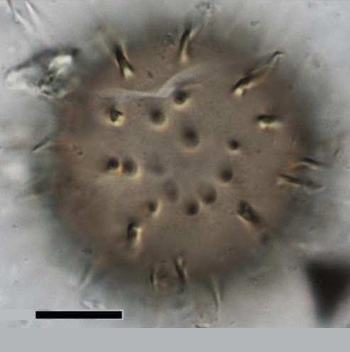
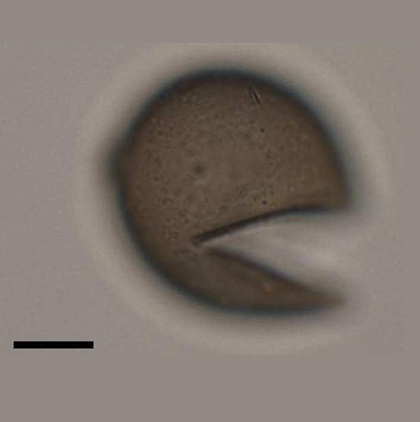

CYSTS LIST
DIPLOPSALOPSIS
The marine heterotrophic dinoflagellate genus Diplopsalis and some genera morphologically similar to Diplopsalis are known as the Diplopsalis group (Abe 1936). The term diplopsalids is used for this group in the present paper. The diplopsalids possess common characteristic features, i.e. the motile cells are simply globular or lenticular with a large sulcal list on the left side (e.g. Abé 1981; Dodge & Toriumi, 1993), and the cysts have a brownish wall with a theropylic archeopyle (Matsuoka 1988; Lewis 1990; Dale et al. 1993). The cysts have a brownish wall with a theropylic archeopyle (Matsuoka 1988; Lewis 1990; Dale et al. 1993). More than 10 genera including Diplopsalis, Diplopsalopsis, Diplopelta have been established within the diplopsalids, because the number of thecal plates is extremely diverse in comparison with the genus Protoperidinium. Among such diplopsalid genera, the genus Oblea was established by Balech (1964) with the plate formula 3', 1a, 6", 3c, 5''', 2'''' and now includes the following three species: Oblea baculifera Balech ex Loeblich Jr. et Loeblich III, Oblea rotunda (Lebour) Balech and Oblea torta (Abé) Balech (Balech 1964). Most diplopsalid cysts have a simple spherical body without ornamentation, and only the cysts of Diplopelta parva (Abé) Matsuoka and Diplopelta symmetrica Pavillard possess spines on the surface. Some species of the marine heterotrophic genus Protoperidinium likewise form round brown spiny cysts with a theropylic archeopyle (e.g. Protoperidinium minutum (Kofoid) Loeblich III and Protoperidinium monospinun (Paulsen) Zonneveld et Dale), although most spiny cysts of Protoperidinium have simple saphopylic archeopyles. The phylogenetic relationship between round brown spiny cysts and theropylic archeopyles is still unclear.
Central body surface |
Processestips/form |
Remarks |
Species |
Central body (um.) |
Processes (um.) |
Image |
Smooth |
AcuminateHollow |
Central body largeand zigzag archeopyle |
cyst of Oblea acanthocysta | 30 to 53 |
1 to 8 |
|
SmoothLiving cysts contain pale droplets |
No processes |
Small size andno processes |
cyst of Oblea rotunda | 22 to 31 |
- |
|
Smooth |
AcuminateSolidUpigmented processes with circular base |
Surface and processes |
cyst of Niea acanthocysta | 30 to 53 |
1 to 8 |
 |
Smooth |
No processes |
No processes and hexagonal archeopyle |
cyst of Niea chinensis | 25 to 50 |
- |
|
Finely and faintly ornamented |
No processes |
Bigger size and ornamentation |
cyst of Niea torta | 60 to 70 |
- |
|
Dark brownSmmooth |
Spherical |
Theropylic |
Diplopsalis latipeltata | 26 to 46.5 (D) |
 |
|
Pale brown to graySmmooth |
Spherical |
Theropylic and apicalV-shaped |
Diplopsalis lenticula | 33 to 50 (D) |
|
|
BrownSmooth |
Spherical |
Theropylic and hexagonal |
Diplopsalis ovata | 40 to 50 (D) |
|
|
Thick wallDark brown w contentsLight brown w empty |
SphericalRounded regions with hairs |
TheropylicHair like processes(1-4 um. L) |
Diplopelta symmetrica | 37 to 50 (D) |
|
|
Thick wallDark brownSmooth |
Spherical |
TheropylicLarge |
Diplopelta globula | 60 (D) |
|
|
Pale brownAbundant granules |
Spherical |
Theropylic |
Lebouraia pusilla | 30 to 40 (D) |
|
|
Pale brownCoarsely granulate |
Spherical to ovoidal |
Large and theropylic |
Boreadinium breve | 30 to 40 (D) |
|
|
MODIFY!Coarsely granulate |
Spherical to ovoidal |
Large and theropylic |
Qia lebouriae | 30 to 40 (D) |
|


Extracted from Radi et al., 2013